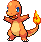
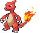
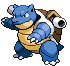
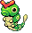

-
Bulbasaur #001

- gram
- poison
Bulbasaur is a quadruped Pokémon, with light green coloring, with details in flat geometric shapes of dark green, in addition to a kind of closed plant on its back, also having red eyes.
-
Ivysaur #002

- gram
- poison
Ivysaur grows small tusks and has visible ear innards. Ivysaur's skin is also slightly bluer than Bulbasaur's. The most notable difference in Ivysaur's appearance, however, is that its bulb has transformed into a pink flower bud with leaves extending outward. This flower bud is heavy, making its hind legs strong and sturdy to support it, making it unable to stand on its hind legs.
-
Venosaur #003

- gram
- poison
There is a large flower on the back of Venusaur. It is said that the flower turns bright colors if it receives plenty of nutrition and sunlight. The scent of the flower soothes people's emotions.
-
Charmander #004

- fire
Charmander is easily the most gentle and well-behaved of its evolutionary line. Its feelings and emotions can be read by the flame at the tip of its tail. It explodes in fury when it is angry, and will flash and become small and weak if it is sick or injured. If it growls, it means it is angry or about to attack.
-
Charmeleon #005

- fire
Charmeleon is a reptilian Pokémon. It has red scales on its underside. There is a horn on the back of its head. It has green eyes and a long snout. It has relatively long arms with three sharp claws. Its short legs have three-clawed feet. The tip of its long, powerful tail has a flame burning on it.
-
Charizard #006

- fire
- fly
Charizard is a bipedal, draconic Pokémon. It is primarily orange with a cream underside from its chest to the tip of its tail. It has a long neck, small blue eyes, slightly raised nostrils, and two horn-like structures protruding from the back of its rectangular head. There are two visible fangs in its upper jaw when its mouth is closed. Two large wings with blue-green undersides sprout from its back, and a horn-like appendage protrudes from the top of the third joint of each wing. A single wing finger is visible through the center of each wing membrane.
-
Squirtle #007

- water
Squirtle is a small, light blue Pokémon with a turtle-like appearance. Like turtles, Squirtle has a shell covering its body with holes that allow its limbs, tail, and head to be exposed. Unlike a turtle, Squirtle is normally bipedal.
-
Wartortle #008

- water
Wartortle are small, bipedal, turtle-like Pokémon with an appearance similar to their pre-evolved form, Squirtle. Some differences are that Wartortles have developed sharper and larger claws and teeth. Their tails are larger and fluffier than Squirtle's, and Wartortle have developed large furry ears.
-
Blastoise #009

- water
Blastoise is a large, bipedal turtle-like Pokémon. Its body is blue and is mostly hidden by its hard, brown shell. This shell has a cream-colored underside and a white crest encircling its arms and separating the upper and lower halves. Two powerful water cannons reside on top of its shell above its shoulders. These cannons can be extended or retracted inward. Blastoise's head has triangular ears that are black on the inside, small brown eyes, and a cream-colored lower jaw. Its arms are thick and have three claws on each hand. Its feet have three claws on the front and one on the back. Protruding from the bottom of the shell is a stubby tail.
-
Caterpie #010

- bug
Its skin is green, it has yellow eyes with black pupils, it has a red antenna (pink in the anime) and it has a green "mouth" (yellow in the anime), it has four small yellow legs and on its body, there are several yellow circles and at the tip of its tail it has a kind of rattle.